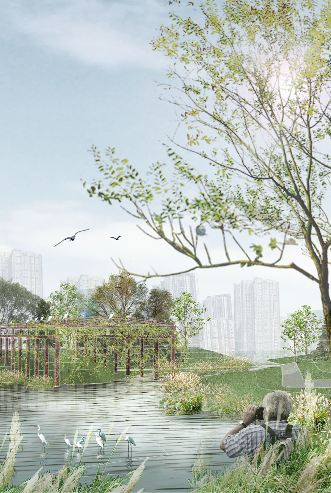
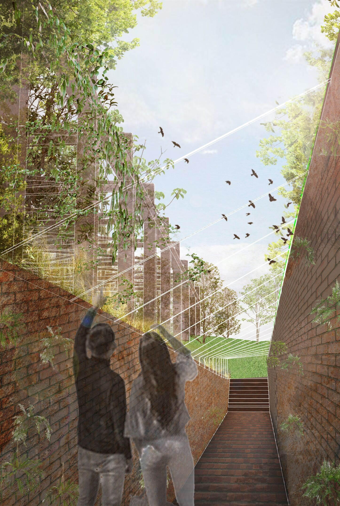
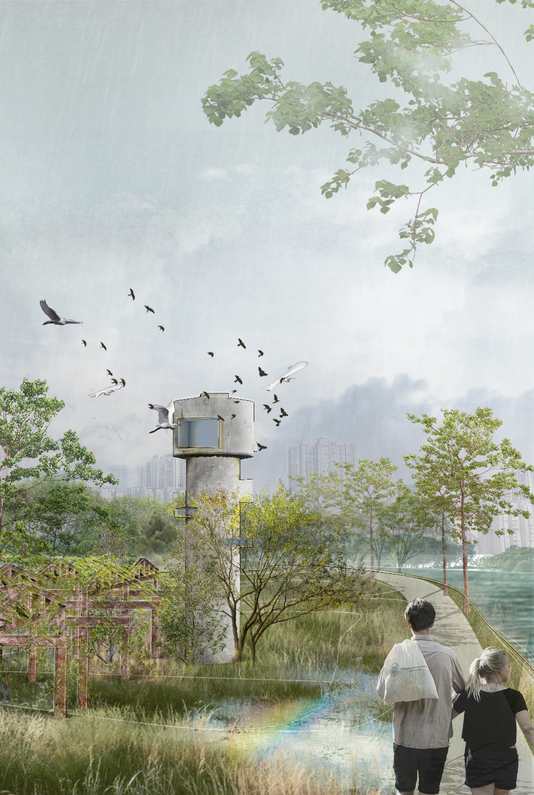
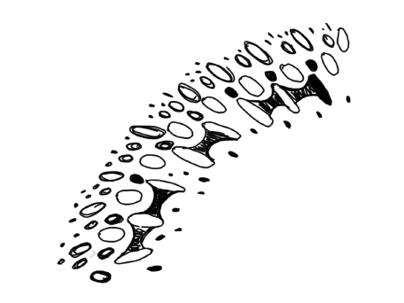
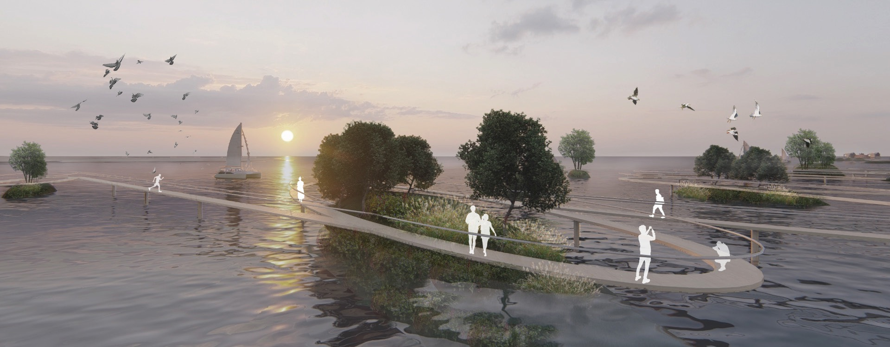
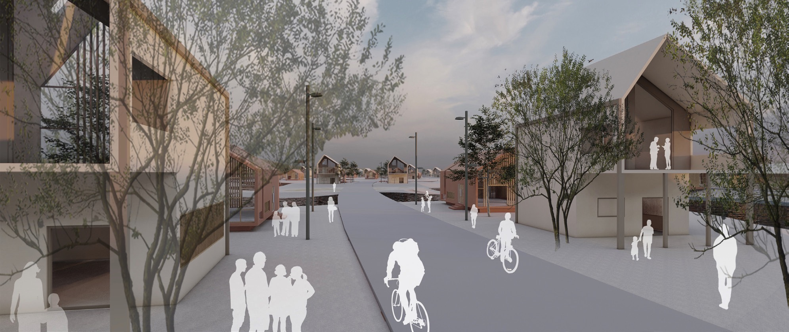

Hello! I am Haoting Gao, A Landscape Architect and UX designer.
Welcome to my home page. Here are two projects I have done in the past. In my design, I think two kinds of incompatible things will produce contradictions when they appear at the same time and space, between industrial development and ecological environment, between population growth and the limit of land resources, and between the new generation and the old city. By studying the complexity and mobility of the social and cultural landscape, we can go back and forth through the landscape, it has the ability to reconcile binary opposites, negotiate differences, and find a space to grow in the boundaries of opposing things.
I used to be a landscape architect. Now I am a dual major graduate student at the University of Michigan. I study UX design and Landscape Architecture. My main study direction is human-centered design and agile development. The home page shows the effects of my two landscape design projects. The first project is to transform an abandoned factory into an egret habitat. The second project is to collect marine garbage and reclaim the sea to build a city. I will put more interactive projects in the future, I hope my life can be more than one role and career, I love design, through landscape design I understand nature, through interaction design I know users and products. It is difficult to say that I have to take a certain path in the future, since as a double-degree student, then I want to go on two paths together.
Return industrial brownfields to nature: The new owner of the abandoned factory are egrets

Egrets Dwelling Framework
The original factory building was first demolished with the remaining steel frame. Since egrets like to stay on long brams, steel beams are added to provide sufficient habitat for egrets.

Bird Watching Tunnel
The walls of bird watching tunnel are red bricks made of waste building materials, which are stacked in a specific way and interspersed with ferns.

Bird Watching Tower
The original water tower will be rebuilt. People can watch birds through the windows opening in the tower. The tower itself becomes a landscape architecture.

Build a new type of environmentally friendly island town: The second possibility of municipal waste and ocean current waste

Curved Bridge
A winding bridge connects the fIoating islands in the sea.

From The Building
A terrace of each building with a view of the island's beautiful scenery.

Street
An orange building with a pitched roof that harmonizes with the existing site in Bali.
